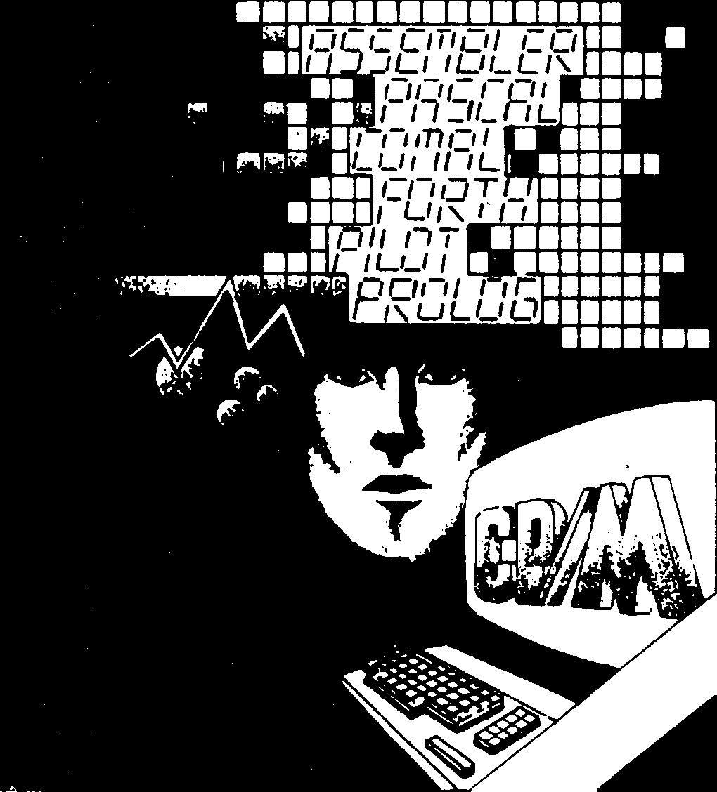
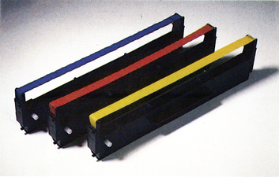
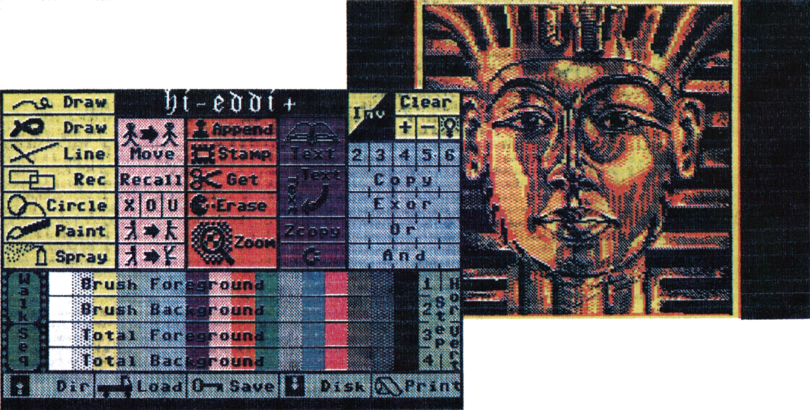

Neue Produkte
Assembler und Programmiersprachen

Das 64'er Sonderheft 12 ist eine wahre Fundgrube für Assemblerprogrammierer und Interessenten für höhere Programmiersprachen. Wir stellen Ihnen die bisher schnellsten Sortierroutinen vor, die alles bisher Dagewesene in den Schatten stellen, Grafik-Fans werden ebenfalls ihre Freude an einer blitzschnellen Fillroutine haben. Sie wurde dem Super-Grafik-Paket »HiRes-Master« aus dem 64'er Sonderheft 11 entnommen.
Das zweite große Thema dieses Sonderheftes sind höhere Programmiersprachen für den C 64 und den C 128. Herausragend ist ein ausführlicher und praxisbezogener Pascal-Kurs. Wer sich für andere Sprachen interessiert, findet Berichte, Vorstellungen und viele Praxis-Tips über Comal, C, der KI-Sprache Prolog und Forth. Das 64'er Sonderheft 12 »Assembler, Programmiersprachen« gibt es ab Ende November an jedem Kiosk.
(jk)Bezugsadresse für 64'er EPROMs
Unsere beiden Listings des Monats aus den Ausgaben 9/86 und 12/86 sind ab jetzt direkt auf EPROM erhältlich.
Preis pro EPROM 19,90 Mark.
Info: Firma Garnet Weiß, Stöberlstraße 82, 8000 München 21
Farbe drucken ohne Farbdrucker
Viele Menschen sind begeistert von den Fähigkeiten moderner Farbdrucker, die sich zum Beispiel hervorragend einsetzen lassen, um bunte Hardcopies von C 64-Grafiken anzufertigen oder sich auch mal für eine bunte Glückwunschkarte oder farbig »aufgepeppten« Brief eignen. Dummerweise sind Farbdrucker meist eine recht teure Sache, die den Kauf wegen einiger Hardcopies oft nicht lohnt. So träumen zwar viele von einem Farbdrucker, aufgrund der beschränkten Anwendungsmöglichkeiten kaufen sie dann aber lieber einen qualitativ hochwertigen Schwarzweiß-Drucker.
Dieses Problems nahm sich die deutsche Firma Scanntronik an, die ein Farbset für Schwarzweiß-Drucker anbietet. Dieses Set besteht aus einer Diskette mit dem Programm »Colourprinter« sowie drei zusätzlichen Farbbändern in den Farben Gelb, Rot und Blau. Mit diesem Set kann jeder Drucker der Serien Epson FX-80 / FX-85 / RX-80 sowie Star NL-10 zum Ausdruck von farbigen Hardcopies genutzt werden.

Das Programm Colourprinter ist dabei eines der komfortabelsten Hardcopy-Programme. So verarbeitet der Colourprinter die Daten aller gängiger Malprogramme, von Koalapainter über Hi-Eddi+, Blazing Paddles und Art Studio bis hin zu Vidcom 64. Das Programm erkennt dabei vollautomatisch, mit welchem Programm das Bild gespeichert wurde, so daß der Benutzer sich darüber keinerlei Gedanken machen muß. Es wird natürlich auch vollautomatisch erkannt, ob es sich um ein Hires- oder ein Multicolor-Bild handelt. Die Bilder werden auf eine Druckfläche von 640 x 400 Punkten geladen, die also bis zu vier Bildschirm-Bilder umfaßt. Einzelne Bilder können an beliebige Stellen dieses Speichers geladen werden. So ist es auch möglich, daß sich Hires- und Multicolor-Bilder überlappen. Dies führt auf dem Bildschirm zwar zu einem kleinen Chaos, wird aber trotzdem vollkommen korrekt ausgedruckt.

Die uns vorliegende Vor-Version des Colourprinter war in bezug auf die Software schon fertiggestellt, lediglich am blauen Farbband sollen noch Änderungen vorgenommen werden, da Blau-Töne im Augenblick noch sehr blaß ausgedruckt werden.
Der Colourprinter soll im Set mit einem deutschen Handbuch, der Diskette und den drei Farbbändern für 138 Mark erhältlich sein. Ein Farbband-Set zum Nachkaufen wird etwa 49 Mark kosten.
(bs)Info: Scanntronik, Parkstr. 36, 8011 Zorneding
Hardware für Bastler
Der C 64/C 128 ist nicht nur der richtige Computer für Programmierer und Spieler, sondern auch für Elektronikbastler. An die Ports des C 64 können interessante Geräte angeschlossen werden, mit denen gemessen, geschalten oder gesteuert wird. Auch innerhalb des C 64 oder der Floppy 1541 kann sich der Elektronikbastler austoben. Manchmal sind es nur ganz kleine Schaltungen, mit denen eine große Wirkung erzielt wird. Das 64'er Sonderheft 13 enthält für jeden, der sich für Elektronik interessiert, eine große Anzahl Schaltungen zum Nachbauen.
Wir zeigen Ihnen, wie Sie richtig löten, wie eine Platine geätzt wird, welche Bauelemente es gibt und welche Werkzeuge ein Elektronikbastler benötigt.
Das 64'er Sonderheft 13 (Hardware) gibt es ab Ende Dezember an jedem Kiosk.
(gk)Wichtige Information für Oki-Anwender
In Ausgabe 12/86, Seite 160, war in Teil 5 unseres Drucker-Kurses zu lesen, daß Besitzer eines Oki-Druckers die Möglichkeit haben, Ihren Drucker im Reparaturfall direkt an Okidata zu schicken. Diese Information ist leider falsch. Defekte Oki-Drucker dürfen in keinem Fall direkt an Okidata geschickt werden. Reparaturen werden ausschließlich über den Fachhandel abgewickelt.
(pd)Adventures für Plus/4
Auch die Besitzer eines Commodore Plus/4 brauchen jetzt nicht mehr auf gute Adventure-Spiele zu verzichten. Vor allem die sehr guten Adventure-Klassiker von Infocom sind nun in Deutschland erhältlich. Vorerst handelt es sich dabei um die Textadventures »Zork I, II und III«, »Starcross« und »Suspended«. Weitere Abenteuer von Infocom werden eventuell noch ins Programm aufgenommen (»Cutthroats« etc.). Diese Adventures werden auf Diskette geliefert und sollen 29 Mark kosten. Es handelt sich dabei um Versionen, die absolut identisch mit denen des C 64 sind. Außerdem ist auch noch ein Cartridge Triple Pack mit Scott Adams Adventures erhältlich. Das Dreierpack kostet 33 Mark, die Module sind allerdings auch einzeln zum Preis von jeweils 15 Mark erhältlich.
(jk)Bezugsquelle: Helmut Stechmann, Sonntagstraße 20, 2152 Horneburg, Tel. (04163) 2176